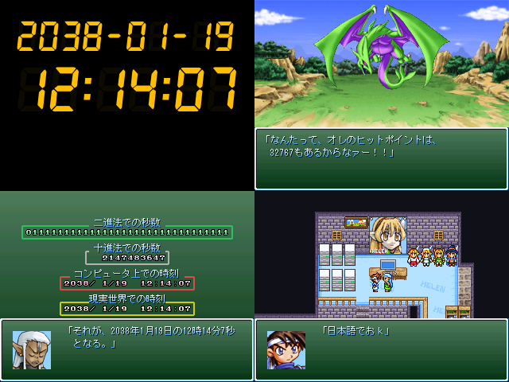

| No.10 もしもで学ぶ2038年問題 |
 |
|
| 作者：ユニ | |
| ツクール：RPGツクール2000 | |
| ジャンル：教育 | |
| 配信/投稿：君は動画を配信してもいいししなくてもいい。/また、動画投稿をしてもいい。 | |
| 作者コメント： なんとなく思いつきで解説ゲーみたいなものが出来上がってきました。 コンピュータがどうやって数を数えているかなどを もしもらしくなく真面目に説明しております。 2進法がわからなくても、いろんなゲームをある程度やったことある人なら 分かるかもしれません。そうではないかもしれません。 |
|
| 管理人コメント： 2000年問題も随分昔の話になりましたね。 |
|
| ダウンロード(1.3MB) / 感想掲示板 | |
| 前の作品 / 次の作品 / TOPへ戻る | |